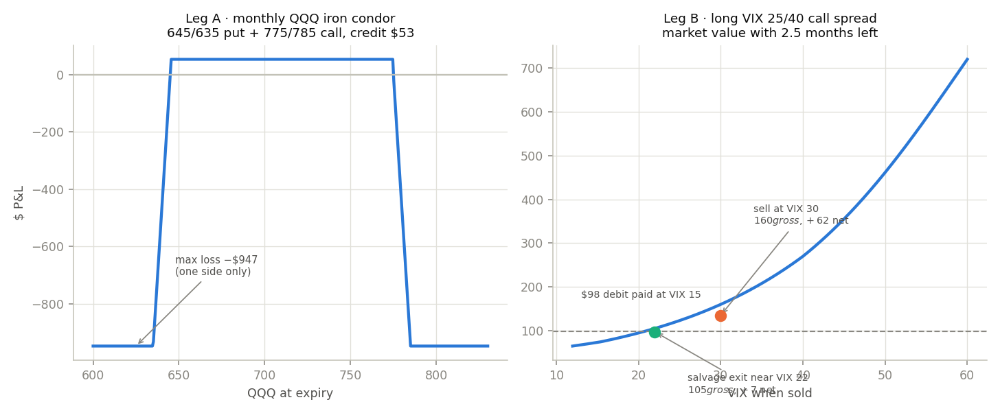
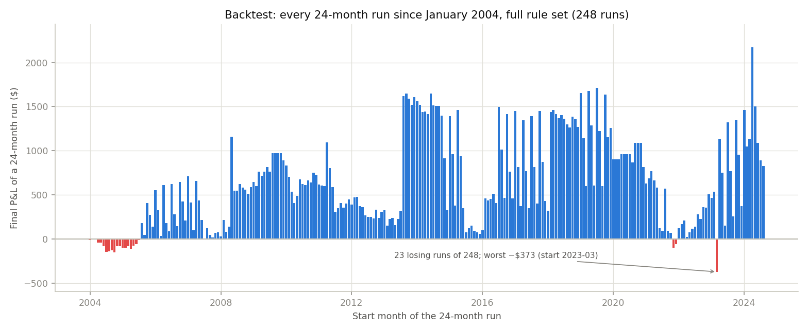
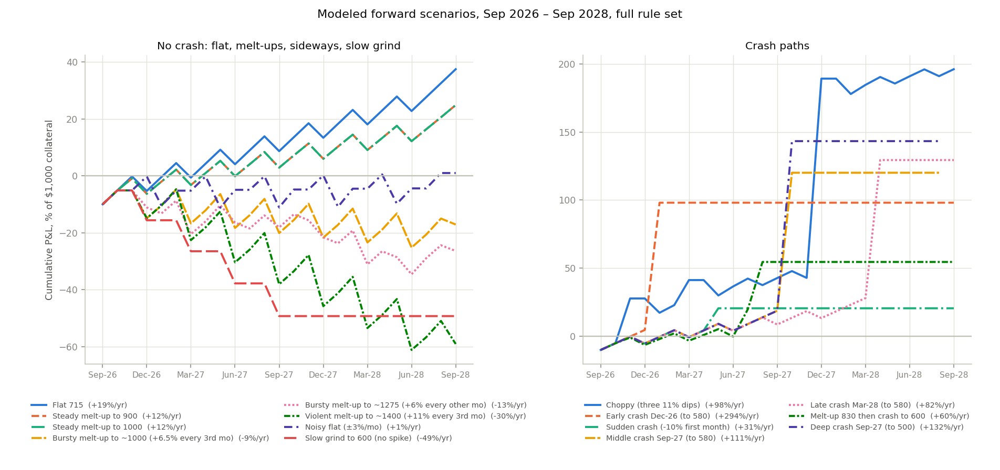
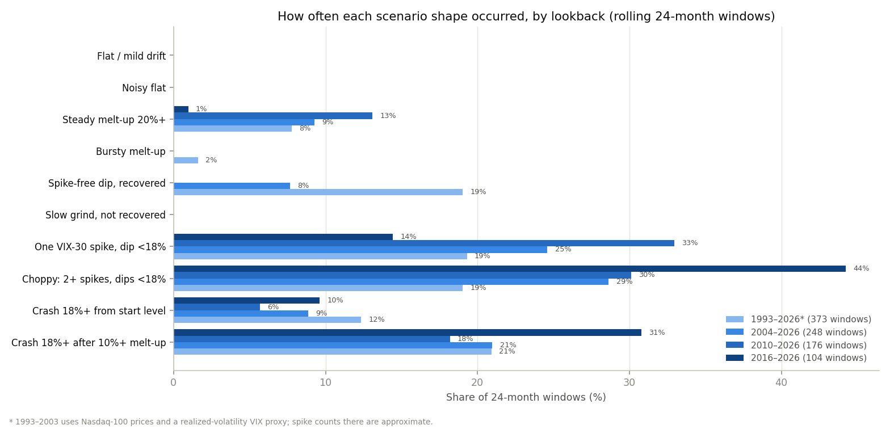

A Self-Funding Volatility Hedge on QQQ
Summary
The strategy is built for one view: the Nasdaq-100 is likely to fall hard at some point in the next two years (the horizon used throughout is September 2026 to September 2028), the timing is unknown, and the index may run up substantially first. A fixed-strike, fixed-expiry put is a bet on timing as much as direction. This position has neither. It holds a rolling long position in VIX call spreads, which pay on any volatility spike whenever it arrives, and funds their cost by selling a far out-of-the-money QQQ iron condor once a month: a put credit spread 10% below the market and a call credit spread 8% above it, on the same $1,000 of collateral. In calm or rising markets the two credits pay the VIX premium with a small surplus, so the position earns a little while it waits. When the crash comes, the VIX spreads are sold for several times their cost. Two filters govern when the condor may be sold: never when VIX is at or above 25, and never when QQQ is below its 10-month moving average. Those two rules are what keep the position out of the way of the losses that would otherwise occur in the second and third months of a decline.
The position requires $1,000 of collateral plus about $100 of cash and can be opened for $1,100; $2,300 makes it self-sufficient through the worst modeled month. It has no expiry, re-strikes itself every month, and can run indefinitely. Tested on every 24-month window since January 2004 (248 runs), it averaged +$630 per run on $1,000 of collateral (about 31% a year), was profitable in 91% of runs, and its worst run lost $373. Section 7 puts historical frequencies on each forward scenario, and Section 8 checks that the design choices hold at 12-, 18- and 36-month horizons as well as 24. It earned the most in windows containing a sharp crash (2018, 2020, 2024–25) and stayed positive through the 2008 and 2022 bear markets. Its weaknesses are a slow, spike-free decline, a bursty melt-up that repeatedly breaches the call side, a very low-volatility regime, and a single gap month through the short strike, each covered in Section 6.
1. The Strategy
The position is a carry pair. Leg A is short QQQ tails on a one-month horizon, mostly the downside tail; Leg B is long S&P 500 volatility on a four-month horizon. The two tails have different shapes. The credit spread only loses if QQQ falls more than roughly 10% inside a single month. The VIX spread pays on any decline sharp enough to push VIX through 30, which historically includes many 6–8% pullbacks that never threaten the short put. There is a wide band of outcomes in which Leg A collects and Leg B costs nothing, and a narrow band, a 10%+ gap in one month, in which both lose. This is not an arbitrage; it is a structure that gets paid for carrying that narrow band of gap risk.

1.1 Leg A: the monthly QQQ iron condor
Once a month, sell the QQQ put about 10% below the current price and buy the put 10 points lower, and in the same order sell the QQQ call about 8% above the current price and buy the call 10 points higher, all roughly 30 days to expiry. Live quotes for the October 16, 2026 expiry with QQQ at 716:
| Side | Spread | Distance OTM | Short leg | Long leg | Credit | Short-leg delta |
|---|---|---|---|---|---|---|
| Put | 645 / 635 | 10% below | $1.705 | $1.365 | $34 | −0.07 |
| Call | 775 / 785 | 8% above | $0.415 | $0.225 | $19 | +0.04 |
| Iron condor | Max loss $947, collateral $1,000 | $53 | ||||
The credits are small by design. The 10%-OTM put has a delta of about −0.07 and the 8%-OTM call about +0.04, so the market prices a 7% and a 4% chance of each being breached in a month. Because the two spreads cannot both finish in the money, Robinhood holds collateral for one side only: $1,000 for the whole condor, the same as for the put spread alone. The call side therefore adds $19 a month of income at no additional capital. The call strike sits closer than the put strike because QQQ calls carry almost no volatility skew: 8% out on the call side pays roughly what 10% out pays on the put side, while QQQ has closed a month more than 8% higher only about 7% of the time since 2004, almost always in bear-market rallies that the filters exclude. The $53 collected each month funds Leg B with about $19 to spare.
1.2 Leg B: the VIX call spread
Keep one VIX call spread open at all times: long the 25 call, short the 40 call, about four months to expiry. At VIX 15 it costs roughly $100 and has $1,500 of maximum value. It is not held to settlement. It is sold in the open market on the first day VIX closes at or above 30, at which point a 25/40 spread with about two and a half months remaining is worth about $160. At VIX 40 it is worth about $270, at VIX 50 about $460, and above 60 it approaches its cap (Section 9). A new spread is bought when the open one has about a month left, so coverage is continuous and the cost averages about $34 a month, the same as the credit from Leg A. VIX options are cash-settled and European-style; because the spread is sold rather than settled, the Wednesday-morning settlement mechanics never come into play. No collateral is required beyond the debit.
1.3 How the two legs behave together
In a calm month: Leg A collects $53, Leg B costs nothing (a spread was bought this quarter or last), net about +$53, or roughly +$19 a month on a quarterly average once the VIX purchase is counted. In a pullback of 5–8%: VIX usually reaches the high 20s, Leg A survives (QQQ is still above the short strike), and the VIX spread may or may not trigger; if VIX closes above 30, Leg B is sold for about $160, roughly +$60 over its cost. In a crash: VIX crosses 30 in the first sharp week, Leg B is sold for roughly $160–720 depending on how far VIX has run by the first close above 30, and Leg A, which was sold before the move, either survives (most crashes begin with a 4–6% month) or is closed at a $100–200 loss. Afterwards the filters keep Leg A off until QQQ has stabilized above its 10-month average and VIX is below 25, and Leg B is re-bought once VIX is under 22. In a strong up month: the call side is breached if QQQ rises more than about 8%; it is closed at 3× its credit (about $60) under R3. The result is a position that earns a little in normal times and books a step-up on each spike.
2. Rules
| # | Rule | Purpose |
|---|---|---|
| R1 | On the monthly expiry Friday, sell next month's QQQ iron condor in one order: put side short 10% below spot (rounded to a $5 strike), long 10 points lower; call side short 8% above spot, long 10 points higher; ~30 days to expiry. Skip the put side if its credit is under $0.15 and the call side if under $0.10. | Re-strikes both sides every month so a run-up or a decline never leaves stale strikes. |
| R2 | Do not sell the condor (either side) if VIX closed at or above 25 that day, or if QQQ closed below its 10-month (about 200-day) moving average. Leg B continues regardless. | Keeps Leg A out of downtrends and elevated-volatility months, where every historical put breach and most of the violent up-months occurred (Section 4). |
| R3 | Close either side of the condor early if its price reaches 3× the credit received for that side, or if QQQ trades within 2% of that short strike. The other side stays open. | Caps the ordinary breach at $60–200 rather than the full width. |
| R4 | Keep one VIX 25/40 call spread with at least one month to expiry at all times. Buy a new 4-month spread when the open one has one month left. Do not buy when VIX is 22 or higher. | Continuous coverage at about $34/month; avoids paying $250–500 for spreads bought into elevated volatility. |
| R5 | Sell every open VIX spread at market on the first daily close of VIX at or above 30. In addition, if VIX rose to 25 or above and then closes back below 22 without ever reaching 30, sell the spread at market that day (the salvage exit). Do not rest a limit order in place of either. | Captures the spike at its real value, and monetises the moderate episodes that never reach 30 instead of letting them decay. Worth +$90 and +$224 a run respectively (Section 3). |
| R6 | After a VIX sale, resume buying spreads only when VIX closes below 22 (R4). Resume selling condors only when VIX is below 25 and QQQ is back above its 10-month average (R2). | Avoids re-loading into a decaying spike and avoids selling either side into bear-market rallies. |
| R7 | Let credits accumulate; do not withdraw them. Review the 25 / 30 / 22 thresholds once a year against the prevailing VIX level. | Builds the buffer that makes the position self-funding. Thresholds are calibrated to a VIX-15 world. |
2.1 Execution on Robinhood
Robinhood does not run conditional rules on its servers. Two things execute unattended: resting good-till-cancelled limit orders and price alerts. Multi-leg option orders are limit-only, so a stop-loss on the condor cannot be a resting order. A resting limit is the wrong tool for the VIX exit as well: a 25/40 spread with two and a half months left is worth about $160 at VIX 30 and does not reach $4.00 until VIX is in the high 40s, so a resting $4.00 sell order would sit unfilled through the moderate episodes and sell late in the severe ones. Every rule is therefore now evaluated by a scheduled daily check that reads QQQ, VIX and open positions and sends a notification with the exact order; each order is reviewed and confirmed before it is placed. In practice this is a 30-second decision a few times a month. The dependency is real: both R3 and R5 rely on the notification being acted on the same evening or next morning. A VIX price alert at 30 and a QQQ alert near the short strike are worth setting as a backstop.
2.2 Funding
| Level | Amount | What it covers |
|---|---|---|
| Minimum to open | $1,100 | $1,000 collateral against the condor (one side only) plus about $100 cash for the first VIX spread. The collateral and the VIX debit cannot be the same dollars. |
| Recommended | $1,500 | Adds a buffer for one or two ordinary breaches ($100–200 each) and a post-crash VIX re-buy at $200–250. |
| No new money in any tested path | $2,300 | $1,000 collateral, $947 for a full-width gap breach in month one, and about $350 of VIX purchases before credits have accumulated. After about eight normal months the credits fund the VIX purchases on their own. |
The $1,000 collateral is the maximum loss on the condor, so a full breach never produces a margin call. It does leave only about $53 of the $1,000, so Leg A pauses until $1,000 is re-posted; that is a continuity question, not a solvency one. Confirm with a reviewed order before the first trade that Robinhood is holding $1,000 for the condor rather than $2,000.
3. Why These Settings
Every parameter was chosen by running the full rule set on the 248 historical windows described in Section 4 and on the forward scenarios in Section 5, then selecting the setting with the best downside profile (10th-percentile and worst-run outcome) rather than the highest average. The reasoning for each follows.
Why 10% out of the money for the credit spread. At today's prices the 10% strike collects $34 a month, which is almost exactly the cost of the VIX sleeve, so the structure is self-funding in a flat market. Further strikes (15%, 20%) collect $13 and $6 and cannot fund the VIX premium; they bleed $20–30 a month and finished $500–900 behind the 10% strike in every calm scenario and every crash-from-here scenario. Closer strikes collect more: the live Oct-16 660/650 spread (8% out) was $0.555 on September 17 against $0.34 for the 645/635. Priced at that live credit, the 8% strike averaged +$692 per 24-month run against +$630 for the 10%, with 3.5 breaches per run against 2.4 and a slightly deeper worst run (−$378 against −$373); a 9% strike is a little better still (+$709, worst −$367). The extra $60–80 a run is inside the error band of the option-pricing model (Section 9); the 9% strike is noted in Section 8 as the natural upgrade once live fills confirm the model, not as a change to make now. The 10% strike is the point where the credit funds the hedge without making Leg A the dominant risk.
Why add a call side, and why 8% out. The put spread alone left the position at roughly zero in flat markets, which is the design goal but leaves nothing to show for two years of work if the crash does not come. A call credit spread on the same expiry uses the same $1,000 of collateral, because only one side of a condor can lose, so its credit is pure incremental income. QQQ calls carry almost no skew, so the 8%-out call pays $19 against $34 for the 10%-out put. Historically the call side, subject to the same two filters, added about $175 per 24-month run (+$455 to +$630) and lifted the share of profitable runs from 82% to 91%; its worst run was shallower than the put side's (−$373 against −$570) because the months in which QQQ rises 8%+ are concentrated in bear-market rallies, which the moving-average filter excludes. Closer call strikes (7%, 5%) pay more but breach several times a run and, at 5%, turn the whole position into a loser. Further strikes (10%) pay $10, too little to clear fees.
Why VIX is not allowed above 25 when selling the credit spread. Volatility clusters. In the historical record, every credit spread that was breached was sold when VIX was already elevated: January 2008, September 2008, January 2022, April 2022, December 2022. The credit on those months is larger, which is the temptation, but the ratio of credit to breach probability is far worse than in a VIX-15 month. Skipping those months (put side alone, no other filter) improved the 10th-percentile run from −$997 to −$370 and the worst run from −$1,674 to −$945 at a slightly higher average; the share of losing runs, about a third, only fell once the moving-average rule was added.
Why QQQ must be above its 10-month moving average. The VIX-25 rule alone still left the two grinding bear markets (2008 and 2022) as losing runs, because in those years VIX sat at 25–35 for a year rather than spiking once, the VIX spread was sold early at 30 for a modest gain, and the credit spreads that the VIX rule did let through were hit by 10%+ months. QQQ spent 10–14 months below its 10-month average in each of those episodes, and every breached credit spread in those years was sold during that stretch. With the full rule set, dropping the moving-average condition cuts the average run from +$630 to +$314, pushes the 10th percentile from +$27 to −$805, and deepens the worst run from −$373 to −$2,060. No other single rule comes close to that; it is the most important line in the strategy and, as Section 8 shows, it is the one whose ranking is most stable across horizons. The cost is two to three months of forgone credit after each dip while QQQ climbs back through the line. A 10-month average was preferred to 6 or 12 months: the 6-month line whipsawed (+$546 mean, 10th percentile −$123) and the 12-month line was a shade behind the 10 (+$625, 10th percentile −$28).
Why the VIX 25/40 spread, four months out. The 25 strike is far enough above the resting level (VIX 13–17) to be cheap, about $100, and close enough that a spike to 30 makes the spread worth four times its cost. A four-month tenor bought every three months keeps coverage continuous with one open spread and one overlapping month, at the lowest premium per month of coverage. Lower strikes (20/35, 22/35) cost two to three times as much and did not recover the extra cost, because most of the payoff comes from the same 30-crossing sale. A higher spread (30/50) is a legitimate alternative but a worse one once the options are priced off the measured futures curve: +$481 against +$630, because a 30-strike call is far out of the money against a two-month future that sits near 25 when spot VIX is 30, so the spread pays little in exactly the moderate episodes that supply most of the sales.
Why the salvage exit exists. Selling only at VIX 30 leaves money in episodes that stop short of it — 2012, 2014, most of 2015–16, 2019, 2023. Adding the rule that a spread is sold once VIX has been above 25 and closes back under 22 raises the average run from +$540 to +$630 and the number of sales per run from about two to three, while the worst run is barely changed. It also has the property that matters most here: it converts the shape the position is otherwise worst at — fear that rises and fades without a crash — from a slow bleed into a small gain. The sale is at market, at whatever the spread is then worth, typically $100–130 against the $98–116 paid.
Why sell at the first close above 30, all at once. Most VIX-30 episodes fade within weeks; only a minority run on to 40 or 50. Selling everything at 30, for about $159 with two and a half months left, captured the reliable part of the payoff. Waiting for 35 raises the average from +$630 to +$673 but pushes the 10th percentile from +$27 to −$87 and doubles the share of losing runs from 9% to 19%, because fewer than half of the 30-crossings went on to 35. Selling half and holding the rest for a bigger spike cut the average by a third. The sale is made at market on the daily check, not with a resting limit order (Section 2.1).
Why re-buy only below VIX 22. After a sale, VIX usually drifts down over one to three months. A 25/40 spread bought at VIX 24 costs $250–300 and at VIX 28 about $450, and the majority of those spreads expire worthless. Waiting for 22, 20 and 24 are within noise of each other (+$630, +$638, +$631); 22 is kept for continuity. The known cost of this rule is a coverage gap after a sale, which is why 2008's October spike was missed (Section 4.3).
4. Historical Backtest, 2004–2026
4.1 Method
The full rule set (R1–R7) was run on every 24-month window starting each month from January 2004 through August 2024, 248 runs in total, using actual QQQ monthly closes and weekly lows and actual daily VIX closes. QQQ prices are normalized to today's 715 level at the start of each run so that a 10-point-wide spread and $1,000 of collateral mean the same thing in 2005 as in 2026. Credits are priced off the live September 2026 quotes and scaled with the VIX level at the time. The VIX spread is sold at the value implied by the first daily close at or above 30 in the month, not at the month's peak. A credit spread that touched its short strike intramonth counts as breached even if QQQ recovered by month end. Full assumptions are in the appendix.
4.2 Results

| Statistic (248 runs of 24 months) | Value | On $1,000 collateral |
|---|---|---|
| Mean final P&L | +$630 | +63% per 24 months (31%/yr) |
| Median | +$556 | +56% (28%/yr) |
| Top quartile | ≥ +$963 | ≥ +96% |
| Bottom quartile | ≤ +$214 | ≤ +21% |
| 10th percentile | +$27 | +3% |
| Worst run (start Mar 2023) | −$373 | −37% |
| Worst point inside any run (Mar 2025 gap breach) | −$712 | −71% |
| Runs that lost money | 9% (22 of 248) | |
| Best run (start Apr 2024) | +$2,173 | +217% |
| Average per run: condors sold / breaches / VIX sales | 17 / 2.4 / 3.2 | |
| Same on the calm-fitted curve, without the stressed anchors (Section 9) | +$396 mean | −$510 worst, 15% losing |
The distribution is skewed the way a long-volatility position should be: most runs finish positive, the few losing runs are shallow, and the best runs are those containing one or more sharp spikes that recovered. Twenty-two runs of 248 lost money. They cluster in two places: starts in 2004–2006, where a long calm stretch never produced a VIX-30 close and the hedge bled with only the salvage exit to offset it, and starts in 2023, where the window opens with VIX already falling from the 2022 highs so the salvage exit fires early and cheaply while the 2024–25 spikes land after the window closes. The worst lost $373, or 37% of the collateral. Most of the 2.4 breaches per run are call-side breaches closed at 3× a $19 credit, about $60 each; the put side breached about 0.8 times per run.
4.3 Named runs
| Run starts | Contains | QQQ over run | Max drawdown | Final P&L | What happened |
|---|---|---|---|---|---|
| Jan 2004 | 2004 grind (−13%, VIX max 19) | +10% | −13% | −$13 | No VIX-30 close all run. The salvage exit monetised the 2004–05 scares, almost exactly covering the hedge premium. One call breach (Nov-04). |
| Oct 2007 | Global financial crisis | −25% | −49% | +$16 | Two sales, at VIX 31 in Nov-07 and 32 in Sep-08, each worth about $160. One put breach. No position when VIX hit 80 in Oct-08 because R4 blocked re-buys above 22; condors sold in only 3 of 24 months. The clearest case of the re-buy rule costing a run its payoff. |
| Jan 2011 | Aug-11 debt-ceiling spike | +18% | −11% | +$616 | Three sales: the Aug-11 spike at VIX 32 plus two salvage exits. No breaches. |
| Sep 2014 | Aug-15 flash crash, Jan-16 selloff | +21% | −10% | +$1,508 | Seven sales — the Aug-15 spike at VIX 41 and six salvage exits through a long stretch of 20–28 volatility. Three breaches. The clearest illustration of what the salvage rule is for. |
| Dec 2017 | Volmageddon, Q4-18 | +36% | −16% | +$430 | Three sales (VIX 37 in Feb-18, then Dec-18). One put breach (Oct-18), one call breach (Apr-19). The Covid spike falls just outside a 24-month window. |
| Jan 2020 | Covid crash, 2021 melt-up | +63% | −16% | +$904 | Five sales, the largest at VIX 39 in Feb-20. Five breaches: two puts (Feb-20, Jan-22) and three calls in the 2020–21 rally. |
| Nov 2021 | 2022 bear market | +2% | −33% | −$102 | Five sales at VIX 31–34 plus salvage exits in late 2022 and early 2023, but four call breaches in the 2023 rally cost more than the sales made. Condors off for most of 2022. |
| Dec 2023 | Aug-24 yen-carry unwind, Apr-25 tariff crash | +50% | −19% | +$370 | Six sales including VIX 39 in Aug-24; one full-width put breach in Mar-25 from a gap month that began above the moving average, plus two call breaches. |
4.4 When does QQQ fall without a VIX spike?
Because Leg B only pays when VIX crosses 30, it matters how often a meaningful decline happens without one. Every QQQ drawdown of 10% or more from a trailing six-month high since 2004:
| Peak | Trough | Weeks | QQQ drawdown | Max VIX close | Max VIX intraday | Worst 4 weeks | VIX ≥ 30? |
|---|---|---|---|---|---|---|---|
| 2004-01-12 | 2004-08-09 | 26 | −15.7% | 19.3 | 22.7 | −11.1% | no |
| 2004-11-29 | 2005-04-11 | 17 | −13.4% | 17.7 | 18.1 | −7.1% | no |
| 2006-01-09 | 2006-07-17 | 24 | −16.9% | 18.1 | 23.8 | −9.6% | no |
| 2007-10-29 | 2009-03-02 | 64 | −51.7% | 79.1 | 89.5 | −27.9% | yes |
| 2010-04-19 | 2010-06-28 | 9 | −15.9% | 41.0 | 48.2 | −11.2% | yes |
| 2011-07-18 | 2011-08-15 | 4 | −16.1% | 43.0 | 48.0 | −16.1% | yes |
| 2012-04-02 | 2012-05-14 | 6 | −10.2% | 25.1 | 25.1 | −7.4% | no |
| 2012-09-10 | 2012-11-12 | 8 | −11.2% | 18.6 | 19.6 | −8.0% | no |
| 2015-07-13 | 2015-08-31 | 7 | −10.1% | 28.0 | 53.3 | −7.8% | no |
| 2015-11-30 | 2016-02-08 | 9 | −14.9% | 27.0 | 30.9 | −12.3% | no |
| 2018-08-27 | 2018-12-17 | 15 | −20.9% | 30.1 | 31.4 | −10.3% | yes |
| 2020-02-10 | 2020-03-16 | 4 | −27.3% | 66.0 | 85.5 | −27.3% | yes |
| 2021-11-15 | 2022-10-10 | 41 | −35.5% | 33.4 | 38.9 | −14.7% | yes |
| 2025-02-10 | 2025-03-31 | 6 | −21.5% | 45.3 | 45.6 | −14.1% | yes |
| 2025-10-27 | 2026-03-23 | 19 | −10.6% | 31.1 | 35.3 | −7.4% | yes |
Fifteen episodes. Seven, all between 10% and 17% deep, never produced a VIX close above 30: the 2004 and 2006 grinds (VIX topped at 18–19), two in 2012, and 2015–16 (27–28). Every decline of 20% or more did produce one, although 2018 and 2022 only barely. So the spike-free decline happens roughly once every three years, but only at moderate depth. In those episodes the position loses the VIX premium for the duration, a few hundred dollars, and the moving-average filter keeps Leg A from making it worse.
5. Forward Scenarios, September 2026 to September 2028
Deterministic monthly paths for QQQ, with VIX derived from each path (15 plus 0.6 times the drawdown percentage, plus a spike equal to 1.8 times any down month's size, decaying by half each month). All rules including both filters apply. Values are cumulative P&L in dollars and as a percentage of the $1,000 collateral, and annualized: the total return multiplied by 12 and divided by the number of months the position was actually deployed (a 5% return earned in six months is 10% a year). Months deployed runs to the position's last cash flow. In the calm paths that is the full 24 months. In the crash paths the VIX spread is sold, QQQ then sits below its 10-month average with VIX above 22, the rules keep both legs switched off, and the collateral is idle and free to redeploy, so a path that pays out in eight months is annualized over eight. The very high figures for the early crashes should be read as a rate on capital while it was at work, not as a repeatable yearly return; nothing in the model says a second crash follows the first.

No-crash paths. The first eight rows have no VIX spike; the three bursty melt-ups stress the call side of the condor.
| Scenario | Final P&L | % of $1,000 | Months deployed | Annualized | Worst point | Condors | Breaches | VIX sales |
|---|---|---|---|---|---|---|---|---|
| Flat 715 | +$375 | +38% | 24 | +19% | −$100 | 24 | 0 | 0 |
| Steady melt-up to 900 | +$249 | +25% | 24 | +12% | −$100 | 24 | 0 | 0 |
| Steady melt-up to 1000 | +$249 | +25% | 24 | +12% | −$100 | 24 | 0 | 0 |
| Bursty melt-up to ~1000 (+6.5% every 3rd mo) | −$171 | −17% | 24 | −9% | −$252 | 22 | 7 | 0 |
| Bursty melt-up to ~1275 (+6% every other mo) | −$264 | −26% | 24 | −13% | −$346 | 23 | 8 | 0 |
| Violent melt-up to ~1400 (+11% every 3rd mo) | −$591 | −59% | 24 | −30% | −$612 | 22 | 7 | 0 |
| Noisy flat (±3%/mo) | +$10 | +1% | 23 | +1% | −$112 | 12 | 0 | 0 |
| Slow grind to 600 (no spike) | −$493 | −49% | 12 | −49% | −$493 | 1 | 0 | 0 |
Crash paths. Months deployed is the month of the VIX sale (or of the last credit collected); after it the position is idle under the rules.
| Scenario | Final P&L | % of $1,000 | Months deployed | Annualized | Worst point | Condors | Breaches | VIX sales |
|---|---|---|---|---|---|---|---|---|
| Choppy (three 11% dips) | +$1,961 | +196% | 24 | +98% | −$100 | 17 | 2 | 4 |
| Early crash Dec-26 (to 580) | +$981 | +98% | 4 | +294% | −$100 | 3 | 0 | 1 |
| Sudden crash (−10% first month) | +$206 | +21% | 8 | +31% | −$100 | 8 | 1 | 1 |
| Middle crash Sep-27 (to 580) | +$1,201 | +120% | 13 | +111% | −$100 | 12 | 0 | 1 |
| Late crash Mar-28 (to 580) | +$1,294 | +129% | 19 | +82% | −$100 | 18 | 0 | 1 |
| Melt-up 830 then crash to 600 | +$546 | +55% | 11 | +60% | −$100 | 10 | 0 | 1 |
| Deep crash Sep-27 (to 500) | +$1,433 | +143% | 13 | +132% | −$100 | 12 | 0 | 1 |
The flat path finishes at +$375, about 19% a year on the collateral, from the condor surplus over the VIX premium. The steady melt-ups finish lower, at +$249, because a rising market walks the 8% call strike closer with every re-strike while the hedge still has to be carried; the melt-up to 1,000 is identical to the melt-up to 900 because no single month approaches the strike. Every crash path finishes well ahead, between +$206 and +$1,433. The choppy path is the outlier at +$1,961 because it monetizes three separate spikes and keeps collecting afterwards.
The bursty melt-ups. What hurts the call side is not the size of the rise but its lumpiness. A month of roughly +6% or more from above trend closes above 98% of the short call strike and is bought back at three times its credit (about −$45 to −$60 including the forgone credit); above +10% the cost is six times credit. At +6.5% every third month (seven breaches in 24 months, QQQ to 1,000) the position loses $171. At +6% every other month (QQQ to 1,275) it loses $264, and at +11% every third month (QQQ to 1,400, a 1999-type run) it loses $591 — now the worst no-crash outcome of all, deeper than the slow grind. VIX stays at 13–18 on all three paths, so Leg B never pays. For scale, since 2004 QQQ has had 20 months of +5.5% or more while it was above its 10-month average with VIX under 25, about one in ten eligible months, and the most in any 24-month window was five (the window ending August 2024). These paths assume seven or eight; they are a stress test beyond the record, not a base case. Removing the call side entirely fixes them but, historically, cuts the mean run from +$630 to +$455 while raising the share of losing runs from 9% to 18%. A 10%-OTM call side is in between (+$588, 12% losing). The 8% call side is kept because the record favors it; the bursty melt-up is the price, and it is listed in Section 6.
The negative rows are the honest cost of the moving-average filter. In the slow grind to 600, QQQ slips below its average in the first month and never recovers it; Leg A sells one condor and is then off for the duration, Leg B is bought repeatedly at a rising cost and never reaches either exit because VIX tops out in the mid-20s only briefly, and the position is idle from month 12 with a loss of $493. The noisy flat path is marginally positive at +$10: only 12 of 24 condors are sold, but the salvage exit monetises the repeated scares.
6. Weaknesses
| Risk | Size | Comment |
|---|---|---|
| Slow, spike-free decline (2004, 2006, 2012 type) | −$100 to −$500 over two years | The one shape the structure does nothing for. VIX never reaches 30, so Leg B expires worthless, and the moving-average filter switches Leg A off for the duration. Historically these declines have been 10–17% deep and have occurred about once every three years. |
| Melt-up month of 6%+ from above the average (Nov 2023, Apr 2020 type) | −$45 to −$120 per event; −$947 on a 13%+ month | The call side is breached and closed at 3× credit under R3 (6× above +10%). About one in ten eligible months since 2004 was this large; at most five occurred in any 24-month window. The full-width case has not occurred from above trend with VIX under 25. |
| Bursty melt-up: repeated 6%+ months with no volatility (1999 type) | −$170 to −$590 over two years | Seven or eight call-side breaches in 24 months cost $171 (at +6.5% every third month) to $591 (at +11% every third month). At measured prices this is now the deepest no-crash loss, ahead of the slow grind, while VIX stays under 20 and Leg B pays nothing. Requires roughly twice the worst historical breach frequency. Mitigation if it begins: move the call side to 10% OTM or drop it; the put side and Leg B are unaffected. |
| Noisy sideways market that keeps crossing the average | −$200 to −$600 | Each cross below the 10-month line costs a month or two of credits. A market that oscillates around its average for a year is the filter's worst case. |
| Gap month through the short strike from a calm start (Feb 2020, Mar 2025) | −$966 in one month | Cannot be filtered: the filters only see the prior close. The $2,300 funding level absorbs it. One such event occurred in the 22-year record while a spread was open. |
| Coverage gap after a VIX sale | Missed second spike | R6 waits for VIX below 22 to re-buy. In 2008 this meant no VIX position during the October spike to 80. Re-buying earlier was tested and lost money on average, but the gap is real. |
| Very low-volatility regime (2017: VIX 10–12) | −$100 to −$200 per year | Credits shrink to $15–20 a month while VIX spreads stay around $65. A mild bleed until volatility normalizes. |
| Sustained high-volatility regime (2022: VIX 25–35 for a year) | Reduced income | Both filters keep Leg A off for months; Leg B is sold early at 30 for modest gains. The position was positive in 2022 but well below its crash-year results. |
| Model error in VIX-spread values | −35% a sale if the stressed anchors are wrong | The futures curve is now measured by put-call parity rather than fitted, so its level is not in doubt. What remains unobservable is how far the curve inverts during a spike, since a calm curve carries no information about that. Anchoring to the observed 2008 and 2020 curves gives +$630 a run; using the calm-fitted reversion unadjusted gives +$396. Verify at the first sale. |
| Execution dependence | Both R3 and R5 need same-day action | Nothing rests on the server any more (Section 2.1). The daily check must be acted on the evening it fires, or the next morning, for both the condor stop-loss and the VIX exit. Price alerts at VIX 30 and near the short strike are the backstop. |
| Call-side breach count understated in the backtest | Modest | The historical data has monthly closes and weekly lows but not weekly highs, so intramonth touches of the call strike are not fully counted. The true call-side breach rate is somewhat above the 1.6 per run measured. |
| Early assignment on the short QQQ put | Operational | QQQ options are American-style. Assignment of a 10%-OTM put is rare and the long put caps the loss. Close rather than hold through expiry if the short strike is in the money. |
Taken together: the structure is designed for a market that either does nothing or breaks sharply, and it is indifferent to when the break comes. Its blind spot is the market that erodes slowly without fear. If the coming decline takes that shape, this position will lose a few hundred dollars over two years and a long-dated put spread would have been the right instrument instead. Its second blind spot is a bubble that inflates in lurches: repeated +6% months with no fear cost the call side $45–60 each, and a 1999-style run of them would lose $400–600 while waiting for the top — at corrected prices, the worst no-crash outcome of any scenario tested.
7. How Often Has Each Scenario Happened?
The forward scenarios in Section 5 are shapes, not forecasts. To attach a probability to each, every rolling 24-month window since 1993 was classified into one of ten shapes using the same features the strategy responds to: the largest drawdown inside the window, how many separate VIX-30 episodes it contained, whether the market recovered, how far it rose, and how many months were large enough to breach the call side. The classification is mechanical (rules in the appendix) and the model scenarios were run through the same rules to confirm they land where their names say. Four lookbacks are shown: 2004–2026 is the period with real QQQ and VIX data and is the one the strategy P&L is attached to; 2010–2026 and 2016–2026 show how the mix has shifted; 1993–2026 adds the dot-com run-up and bust using Nasdaq-100 prices from Robinhood and, before July 2002, a VIX proxy built from realized volatility (fitted on 2004–2026, R² 0.52). The proxy catches the large spikes but misses brief ones such as October 1997, so the 1993–2003 spike counts are approximate and lean toward "spike-free".

7.1 Shape frequencies and what the strategy earned in each
| Historical shape (24-month window) | 1993–26* | 2004–26 | 2010–26 | 2016–26 | Episodes (2004–26) | Strategy P&L, 2004–26: mean / worst |
|---|---|---|---|---|---|---|
| Flat / mild drift | 0% | 0% | 0% | 0% | 0 | never occurred |
| Noisy flat (3+ MA crossings) | 0% | 0% | 0% | 0% | 0 | never occurred |
| Steady melt-up (20%+, no big months) | 8% | 9% | 13% | 1% | 2 | +$257 / +$58 (n=23) |
| Bursty melt-up (4+ call-breach months) | 2% | 0% | 0% | 0% | 0 | never occurred |
| Spike-free dip 10–18%, recovered | 19% | 8% | 0% | 0% | 1 | −$77 / −$151 (n=19) |
| Spike-free decline, not recovered (slow grind) | 0% | 0% | 0% | 0% | 0 | never occurred |
| One VIX-30 spike, dip under 18% | 19% | 25% | 33% | 14% | 6 | +$820 / +$46 (n=61) |
| Choppy: two or more VIX-30 spikes, dips under 18% | 19% | 29% | 30% | 44% | 5 | +$864 / +$22 (n=71) |
| Crash (18%+) from near the start level | 12% | 9% | 6% | 10% | 6 | +$313 / −$102 (n=22) |
| Crash (18%+) after a melt-up of 10%+ | 21% | 21% | 18% | 31% | 6 | +$647 / −$373 (n=52) |
* Windows starting 1993–2003 use the VIX proxy. "Episodes" counts separate runs of consecutive start months that fall in the shape, which is closer to an independent sample size than the window count: 248 overlapping windows since 2004 contain about eleven independent two-year periods, so every percentage here has wide error bars.
Three things stand out. First, the calm scenarios have essentially never happened. A VIX close at or above 30 occurred inside 83% of 24-month windows since 2004 (66% of 12-month windows, 94% of 36-month windows), and the 17% of windows without one were all rising markets. A two-year stretch in which QQQ drifts sideways with VIX at 15 the whole time, the "Flat 715" baseline, has no historical instance since 1993, and neither does the noisy flat or the spike-free slow grind that never recovers. The 2000–2002 and 2022 declines both came with repeated spikes. The two scenarios in which the position loses the most are therefore also the two with the thinnest historical support; that is a reason for comfort, not for dismissing them, since eleven independent periods cannot rule out a shape that happened in 2004–2006 at smaller size (the spike-free 10–18% dip, 8% of windows, in which the position lost $77 on average, the only historical shape that loses).
Second, the common shapes are the ones the position is built for. More than half of all windows since 2004 (54%) contained one or more VIX-30 spikes with no drawdown deeper than 18%: the 2010, 2011, 2015, 2018, 2024 and 2025 episodes. These are the strategy's best environments, +$820 on average with one spike and +$864 with two or more, and since 2016 they make up 59% of windows. Third, crashes of 18% or more appeared in 30% of windows since 2004 (33% since 1993), and in seven of every ten of them QQQ first rose 10% or more from the window's start, which is the melt-up-then-crash shape and the one closest to the thesis behind this position. The position earned +$647 on average in those windows. Crashes that began from near the starting level earned +$313, because in the historical instances (late 2007, early 2008, late 2021) VIX was already elevated when the window opened, the first spread was bought dear or the re-buy rule kept the position out of the largest spike, and the condors were filtered off for months.
7.2 Probability of each forward scenario
Each forward scenario from Section 5 mapped to its historical shape, with the share of 24-month windows in that shape over each lookback. For the crash scenarios the share is further split by the feature that defines the scenario: the month in which the drawdown first reached 18% (early: months 1–6; middle: 7–15; late: 16–24), whether the crash contained a single month of −10% or worse, and whether it went beyond 30%. These sub-features overlap, so the crash rows do not sum to the crash total.
| Forward scenario | Historical shape | 1993–26* | 2004–26 | 2010–26 | 2016–26 | Model P&L | Historical P&L in shape |
|---|---|---|---|---|---|---|---|
| Flat 715 | Flat, no spike | 0% | 0% | 0% | 0% | +$375 | no instance |
| Steady melt-up to 900 / 1000 | Steady melt-up 20%+ | 8% | 9% | 13% | 1% | +$249 | +$257 / +$58 (n=23) |
| Bursty melt-ups (three variants) | Bursty melt-up | 2% | 0% | 0% | 0% | −$171 to −$591 | no instance |
| Noisy flat (±3%/mo) | Noisy flat, no spike | 0% | 0% | 0% | 0% | +$10 | no instance |
| Slow grind to 600 (no spike) | Slow grind, not recovered | 0% | 0% | 0% | 0% | −$493 | no instance |
| (no forward scenario) | Spike-free dip, recovered | 19% | 8% | 0% | 0% | n/a | −$77 / −$151 (n=19) |
| (no forward scenario) | One spike, dip under 18% | 19% | 25% | 33% | 14% | n/a | +$820 / +$46 (n=61) |
| Choppy (three 11% dips) | 2+ spikes, dips under 18% | 19% | 29% | 30% | 44% | +$1,961 | +$864 / +$22 (n=71) |
| Early crash Dec-26 (to 580) | Crash from start, early (months 1–6) | 10% | 6% | 3% | 6% | +$981 | +$313 / −$102 (n=22) |
| Sudden crash (−10% first month) | Crash from start, with a −10% month | 12% | 9% | 6% | 10% | +$206 | +$313 / −$102 (n=22) |
| Middle crash Sep-27 (to 580) | Crash from start, middle (7–15) | 2% | 3% | 2% | 4% | +$1,201 | +$313 / −$102 (n=22) |
| Late crash Mar-28 (to 580) | Crash from start, late (16–24) | 0% | 0% | 0% | 0% | +$1,294 | +$313 / −$102 (n=22) |
| Deep crash Sep-27 (to 500) | Crash from start, 30%+ deep | 10% | 6% | 3% | 5% | +$1,433 | +$313 / −$102 (n=22) |
| Melt-up 830 then crash to 600 | Crash after 10%+ melt-up | 21% | 21% | 18% | 31% | +$546 | +$647 / −$373 (n=52) |
Reading the table: the crash scenarios as a group are the likeliest of the named shapes (about 30% of windows), and within them the melt-up-first version is the single most common, at one window in five. The steady melt-up is next at about one in ten. The largest remaining gaps between the deterministic paths and history are the choppy path, where three evenly spaced 11% dips pay +$1,961 against +$864 for real choppy windows, and the crash-from-start scenarios, where the deterministic VIX path spikes more cleanly than the messy elevated-VIX episodes of late 2007 and 2021 that make up the historical set. A "late crash from the starting level" never occurred: a market that has not fallen in 16 months has always risen enough to be classed as a melt-up first.
Weighting each shape's historical P&L by its 2004–2026 frequency reproduces the unconditional average of +$630 by construction. Weighting by the 1993–2026 mix — which contains the dot-com bust, the one bursty melt-up on record and a far higher share of spike-free dips — gives roughly +$480. The position's expected result is not very sensitive to which lookback one believes; what changes is the tail, which depends on the two shapes that have not yet occurred.
8. Horizon Robustness: Are the Filters Fitted to 24 Months?
The 24-month horizon matches the thesis, but a design choice that only wins at 24 months would be fitted to the window rather than to the market. Every rolling-window backtest was therefore repeated at 12, 18 and 36 months for the base rules and for each alternative that was considered in Section 3. The table shows mean P&L per month deployed (so horizons are comparable), the 10th-percentile run and the share of losing runs.
| Variant | 12 mo $/mo · p10 · losing | 18 mo | 24 mo | 36 mo |
|---|---|---|---|---|
| Base (10% put, 8% call, MA, 25/40, VIX-30 + salvage) | $23 · −$72 · 21% | $25 · −$27 · 15% | $26 · +$27 · 9% | $27 · +$213 · 4% |
| No MA filter | $9 · −$816 · 26% | $11 · −$799 · 27% | $13 · −$805 · 23% | $14 · −$1,075 · 30% |
| No call side | $15 · −$149 · 41% | $18 · −$176 · 30% | $19 · −$187 · 18% | $20 · +$0 · 10% |
| Call 10% OTM | $21 · −$93 · 27% | $23 · −$77 · 19% | $25 · −$53 · 12% | $25 · +$210 · 6% |
| Call 7% OTM | $22 · −$87 · 25% | $24 · −$47 · 18% | $25 · −$33 · 14% | $26 · +$68 · 8% |
| Put 8% OTM | $24 · −$146 · 19% | $27 · −$34 · 12% | $29 · +$48 · 8% | $30 · +$289 · 4% |
| Put 15% OTM | $11 · −$231 · 47% | $14 · −$292 · 39% | $15 · −$274 · 31% | $16 · −$267 · 19% |
| VIX 30/50 | $17 · −$29 · 16% | $19 · +$4 · 8% | $20 · +$71 · 4% | $21 · +$141 · 4% |
| Sell trigger 35 | $22 · −$138 · 30% | $26 · −$105 · 25% | $28 · −$87 · 19% | $29 · +$0 · 10% |
| No salvage exit | $18 · −$113 · 23% | $21 · −$82 · 23% | $23 · −$56 · 15% | $25 · +$128 · 4% |
| Resting $4.00 GTC limit for the VIX exit | $14 · −$118 · 22% | $15 · −$91 · 21% | $17 · −$58 · 15% | $19 · +$163 · 6% |
| Re-buy < 20 | $23 · −$73 · 23% | $25 · −$43 · 16% | $27 · −$13 · 12% | $27 · +$281 · 4% |
| Re-buy < 24 | $23 · −$66 · 19% | $25 · −$28 · 13% | $26 · +$50 · 9% | $27 · +$269 · 4% |
| Skip VIX ≥ 22 | $21 · −$78 · 24% | $23 · −$44 · 20% | $25 · −$16 · 13% | $25 · +$162 · 4% |
| Skip VIX ≥ 30 | $23 · −$73 · 22% | $26 · −$27 · 14% | $27 · +$41 · 9% | $28 · +$240 · 4% |
| Leg C +15 (not adopted) | $22 · −$86 · 22% | $24 · −$85 · 19% | $25 · −$143 · 17% | $26 · −$85 · 14% |
| Leg C +30 (not adopted) | $24 · −$72 · 19% | $26 · −$24 · 12% | $27 · +$59 · 8% | $28 · +$268 · 4% |
Every choice in the base rules keeps its ranking at all four horizons. The moving-average filter is the largest effect and is horizon-independent: without it the position earns roughly half as much per month and the 10th-percentile run is −$800 to −$1,075 at every horizon. The 8% call side beats no call side and beats the 10% call side everywhere; 7% is a near tie. Selling at VIX 30 beats waiting for 35 everywhere. Re-buying below 22 beats 20 and ties 24 everywhere. The 25/40 VIX spread beats 30/50 on return at every horizon while 30/50 keeps a slightly better tail, so that one remains a preference rather than a ranking. The salvage exit and the abandonment of the resting $4.00 limit both hold at every horizon: the limit order costs $8–12 a month of return at every length tested, and the salvage rule adds $3–4.
Two findings cut the other way and are recorded so they are not forgotten. The VIX-25 condition in R2 is not earning its place. Loosening it to VIX 30 is equal or slightly better at every horizon (at 24 months, +$651 against +$630 with the same worst run) while tightening it to 22 is worse everywhere. The rule is kept because it costs almost nothing and it is the condition that would have mattered in 2008 and 2022 had the moving average been slower to turn — but it should be understood as a backstop to the moving average, not as a filter with independent evidence behind it. And the 8% put strike, priced at its live credit, earns $2–3 more a month than the 10% strike at every horizon, with more breaches and a deeper worst run at every horizon. That is a stable trade-off. Both differences sit inside the error band of the option-pricing model (Section 9), which is the reason neither is adopted here: changing live rules on that basis would be fitting to the model rather than to the market. Revisit once live fills confirm the pricing.
The one genuine horizon effect is in the tail rather than the ranking. At 12 months the 10th-percentile run is −$72 and 21% of runs lose money; at 24 months those become +$27 and 9%; at 36 months, +$213 and 4%. That is the structure of the position rather than a flaw in it: the income accrues at about $26 a month while the payoff arrives in lumps a few times a decade, so a short window can easily contain the cost without the payoff. It is the quantitative case for holding the position for the full two years rather than judging it after six months.
9. How the VIX Options Are Priced
A VIX option does not settle on spot VIX. It settles on a VIX future, and that future can sit far from spot: above it in calm markets, below it in a panic. Everything this strategy earns depends on what the 25/40 spread is worth at the moment of sale, so the future is the single most important input in the paper.
9.1 Measuring the future instead of fitting it
The obvious approach — fitting the future and the volatility skew together to call prices — does not work: a higher future with a steeper skew prices the same calls as a lower future with a flatter one, so the fit can land anywhere along that trade-off. The future has to be measured separately.
Put-call parity removes the model entirely. For European options on the same future, C − P = e−rT(F − K), so every strike where both a call and a put are quoted yields the future directly. On the September 17 2026 close, the November 18 expiry gives 18.69, 18.66, 18.68 and 18.69 at strikes 16, 17, 18 and 20 — a spread of three cents across four strikes. The January 20 expiry gives 19.84 and 19.86. Spot VIX was 15.44, so the two-month future was 18.68 and the four-month 19.85. The curve is in steep contango: the futures sit three to four points above spot.
| Expiry | Strike | Call | Put | Implied future |
|---|---|---|---|---|
| Nov 18 2026 (62 days) | 16 | $3.275 | $0.605 | 18.69 |
| 17 | $2.780 | $1.135 | 18.66 | |
| 18 | $2.425 | $1.750 | 18.68 | |
| 20 | $1.945 | $3.250 | 18.69 | |
| Jan 20 2027 (125 days) | 17 | $3.975 | $1.175 | 19.84 |
| 20 | $2.915 | $3.050 | 19.86 |
With the future pinned, the skew is fitted to it rather than against it: σ(K) = a + b·ln(K/F) + c·ln(K/F)², least-squares to all sixteen quoted calls and puts across both expiries. The model then reproduces every spread this paper uses to within about 2%: the four-month 25/40 at $99 against $101.50 quoted, the two-month 25/35 at $51 against $51.50, the four-month 45/55 at $21 against $21.50, and — and, as an independent check, the two-month 20/17 put spread at $212 against $211.50 and the 20/16 at $264 against $264.50.
9.2 The term structure, and the one thing still unobservable
Two measured points fix a level-space mean-reverting curve, F(V,T) = θ + (V − θ)·e−κT, at θ = 20.5 with a half-life of 1.4 months. That reproduces today's curve at both tenors almost exactly. But a calm curve carries no information about how far the curve inverts in a panic, and extrapolating this one says the two-month future would be 27.6 when spot VIX is 40 and 42 when spot is 80. The observed values were about 30 in February 2020 and about 50 in October 2008. So the extrapolation is too aggressive at the extremes, and every headline figure in this paper uses a curve blended toward those two observed anchors. The unblended calm-fitted curve is carried through the paper as the pessimistic case.
| Spot VIX | 2-mo future: base case | 2-mo future: calm-fit only | 25/40 at sale: base case | 25/40 at sale: calm-fit only |
|---|---|---|---|---|
| 15.44 | 18.6 | 18.6 | $74 | $74 |
| 20 | 20.8 | 20.3 | $94 | $89 |
| 25 | 23.1 | 22.1 | $122 | $109 |
| 30 | 25.5 | 24.0 | $159 | $134 |
| 40 | 30.2 | 27.6 | $269 | $202 |
| 50 | 35.3 | 31.3 | $461 | $302 |
| 60 | 40.4 | 34.9 | $720 | $444 |
| 80 | 50.6 | 42.2 | $1,196 | $816 |
Read the right-hand pair as the payoff of the hedge: bought for about $98 at VIX 15, the 25/40 is worth about $159 at the first close above 30 and $269 at 40 — a sale at roughly one and a half to under three times its cost in the common episodes, with the large multiples reserved for the rare 50+ spikes.
What is still uncertain. The level of the curve is measured, not assumed, so it is not in doubt. What cannot be observed from a calm market is the degree of inversion in a crisis, and the two columns above bracket it: anchored to the 2008 and 2020 curves the strategy averages +$630 a run with a worst run of −$373 and 9% of runs losing; on the unblended calm-fitted extrapolation it averages +$396 with a worst run of −$510 and 15% losing. Both are positive and both preserve the rule rankings in Section 8. The first live sale will settle which is closer — compare the fill against the table above and adjust.
A note on method. The pricing model was validated against quotes it was not fitted to — a second expiry and the put side — and reproduces them within about 2%. Even so, the figures in this paper should be treated as good to perhaps 15%, not to the dollar, because the one input that matters most in a crisis, how far the curve inverts, cannot be observed from a calm market.
10. A Short VIX Leg on the Idle Collateral: Tested, Not Adopted
The condor is switched off in about seven months of an average two-year run, and the $1,000 of collateral sits idle in exactly the months when the position is otherwise paying premium with nothing coming in. The obvious use for it is to sell volatility, since VIX is high in those months and falls back afterwards more often than not. This section records the test and the reason the idea is not in the rules.
The idle months split into two populations that behave in opposite ways. Where a VIX close of 30 or more occurred within the previous three months, VIX falls over the following quarter by 5.8 points on average; that is mean reversion after a spike, and it is real. Where the condor is off only because QQQ is below its moving average, with VIX in the high teens or low twenties, VIX rises over the next quarter by 2.2 points on average and the odds of a VIX-30 close within three months are 38%, twice the unconditional rate. That is the 2008 and 2022 shape, and selling volatility into it is the classic way to lose a great deal of money. Any version of this idea has to be restricted to the post-spike population.
The rule tested was: in a month that is both idle and post-spike, sell a 10-point-wide VIX call spread struck a fixed distance above spot, about two months out, one at a time, on the freed collateral, and let it settle. It trades about 30 times in 22.6 years, so the whole result rests on a handful of events.
| Strike above spot VIX | Mean run | 10th pct | Worst run | Losing runs | Extra mean per $1 of extra worst case |
|---|---|---|---|---|---|
| (none — the adopted rule set) | +$630 | +$27 | −$373 | 9% | — |
| +5 points | +$621 | −$148 | −$630 | 19% | loses on both counts |
| +10 points | +$625 | −$101 | −$725 | 17% | loses on both counts |
| +15 points | +$604 | −$143 | −$807 | 17% | loses on both counts |
| +20 points | +$608 | −$84 | −$608 | 15% | loses on both counts |
| +25 points | +$641 | −$13 | −$373 | 12% | 0.03 (no extra worst case, worse tail) |
| +30 points | +$657 | +$59 | −$373 | 8% | no extra worst case |
At measured prices the case is no longer close. Every offset from +5 to +20 now loses money outright relative to doing nothing, and all of them deepen the worst run and roughly double the share of losing runs. The +15 version buys nothing at all and costs $434 of worst case, turning the October 2007 window, the global financial crisis, from +$16 into −$725. In September 2008 the rule sells a 55/65 call spread for $53 with VIX at 39; the spread settles in November with VIX at 67.6 and costs the full $1,000. Nine profitable trades in the same window do not cover it. That is the structural objection in a single event: after Leg B has been sold, and while R4 blocks the re-buy, the book holds no long volatility at all, so the short spread is naked in precisely the situation the whole position exists to profit from.
Only the +30 row still shows a gain, and it is worth being explicit about why it should not be trusted. Its worst run is unchanged because in November 2008 the settlement came in at 67.64 against a 70-point strike. A margin of $2.36, on the single event that decides the outcome, in a sample of thirty trades. That is not evidence of a safe strike; it is one coin landing on its edge. If this leg is ever wanted in the book, +30 is the only place to put it, sized so that a full-width loss is survivable, and with no illusion that the backtest establishes the tail.
Two further variants were tested and rejected outright. Selling a 45/55 call spread against the long 25/40 — turning Leg B into a VIX condor, which needs no extra collateral — cheapens the hedge by about $100 a run but costs more than that in buy-backs when the spike arrives. And running the rule on all idle months rather than post-spike months only, the version that uses the most idle capital, is the version that sells a 35/45 spread in August 2008 and settles it with VIX at 70.
Conclusion: the idle collateral stays idle. A short volatility leg here has a positive expected value of perhaps $13 to $42 per trade across thirty trades, it trades about 1.3 times a year, and its loss distribution is decided by one or two events in the record. Against a position whose entire purpose is to be long volatility when it matters, that is not a trade worth making — and at measured prices, most versions of it are not a trade worth making at any price.
Appendix: Modeling Assumptions
Put-spread pricing: log-linear interpolation of live Oct-16-2026 mids (8%: $0.555, 10%: $0.34, 15%: $0.13, 20%: $0.06), scaled by (VIX/15) to a power rising with distance OTM, less $0.02 fees. Call-spread pricing: $0.19 at VIX 15 (live 775/785 mid) scaled by (VIX/15)0.8, less $0.02; breached if the month-end close exceeds 98% of the short call strike, at 3× credit, 6× after a 10%+ up month, full width after 13%+. Breach cost: 3× credit ordinarily, 6× after an 8%+ down month, full width after a 12%+ down month.
VIX-spread cost and sale value: the Section 9 model, plus $1.68 fees; a sale is priced with 2.5 months of the 4-month tenor remaining, and settlement at expiry uses the actual VIX close nearest the 18th of the expiry month, since VIX options expire mid-month rather than at month end.
Data: QQQ weekly closes and lows (split-adjusted) and daily VIX closes, January 2004 to September 2026; two erroneous VIX prints (Jan 9 2023, Nov 2 2023) removed. Moving average: 10 monthly closes. Runs are 24 months to match a September 2026 to September 2028 horizon. No slippage beyond mid pricing. Return percentages use the $1,000 collateral as the base; the cash actually tied up is $1,100–1,150. Annualized returns are simple: (P&L / 1,000) × 12 / months deployed, where months deployed is the month of the last cash flow (24 when the position runs to the end).
Scenario classification (Section 7), applied in order to each 24-month window of monthly closes: crash = drawdown of 18% or more from the running high with a VIX close of 30 or more (split by whether the pre-crash peak was 10%+ above the start); else choppy = two or more separate VIX-30 episodes; else one spike; else spike-free decline if drawdown 10%+ (not recovered if the window ends 10%+ below its start); else melt-up if the window ends 20%+ above its start (bursty if four or more months gained 5.8%+ from above the 10-month average with VIX under 25); else noisy flat if QQQ crossed its 10-month average three or more times; else flat.
1993–2003: Nasdaq-100 monthly closes and weekly lows scaled to QQQ; VIX proxy = 6.4 + 0.67 × trailing 8-week realized volatility (annualized, %), fitted on 2004–2026 weekly data; for those years a spike is only counted when the proxy reads 30+ during a 10%+ drawdown.